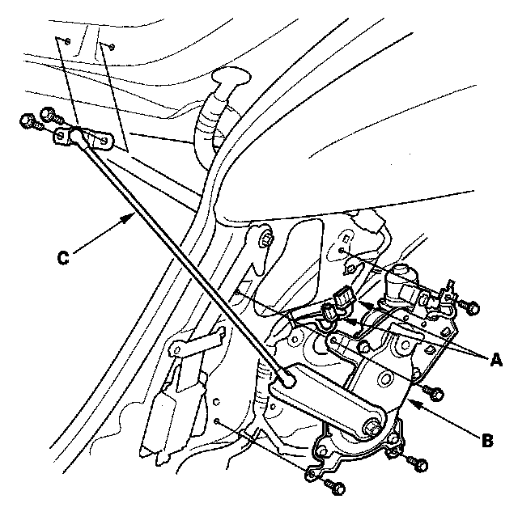

Trunk / Liftgate Motor: Service and Repair
Drive Unit Replacement1. Remove the rear pillar trim.

2. Disconnect the 2P and 8P connectors (A) from the drive unit (B).
3. Carefully remove the bolts and support strut (C) from the tailgate.
4. Remove the mounting bolts and drive unit.
5. Install in the reverse order of removal.